TicketMaster Analysis of 2021 Concerts
Introduction
Concerts are a crucial component of an artist’s new album promotion. Additionally, it gives fans a chance to see and hear their favorite musicians perform live. Many fans are extremely passionate about the artists they enjoy, and they will go to any lengths to see them perform. Say your favorite performer just made the announcement that they will be making a tour stop in your area. You would probably use your phone or computer to purchase tickets, but what website would you be directed to? Ticketmaster or Live Nation, which is owned by Ticketmaster, are the most likely candidates. Ticketmaster is the largest global ticket marketplace for the majority of concerts and sporting events. Two college students who wanted to improve their theater’s ticketing system started it in 1976. The concert industry is worth 51.3 billion dollars in 2022. Every year Ticketmaster sells nearly 500 million tickets for a huge variety of concerts, events, and games, and every year their sites receive more than a billion visits. By far the market leader in the live event and ticketing space, Ticketmaster holds over 70% of the market (and over 80% for live concerts). More commonly, Ticketmaster is recognized for managing artists, distributing ticket-selling software, and selling tickets. Because of the contracts, they have with sporting and concert venues, the majority of artists are compelled to use Ticketmaster in order to sell tickets. While Live Nation jointly owns a sizable portion of venues, strengthening its monopoly. Through this data analysis, we can confirm the elements that affect the minimum cost of the concert ticket. It will be interesting to compare and contrast the variables that affect the minimum price of the concert ticket sold by Ticketmaster given the number of people compelled to use this platform for the most well-known concerts. We’ll be closely examining the impact of the venue’s size and population, the event’s setting, the artists performing, each artist’s level of popularity, the performance day (weekend or weekday), and the minimum price of concert tickets. The following research questions were developed in view of all of these: 1. Does the size and population of the venue affect the price of the concert ticket? 2. Does the location of the event affect the price? 3. Is the price dependent on the artist? 4. Is the pricing impacted for each artist along with their performance date? 5. Is the mean minimum price of Ed Sheeran the same as the mean minimum price of G-Eazy? 6. Is the pricing of the tickets dependent on the popularity of the artist? 7. Is the pricing impacted if the artist performed on a weekend? 8. What factors influence the pricing of the tickets? This analysis is important because when a global giant dominates a market, consumers feel as though they have no other options therefore, it is crucial for consumers to be aware of the variables that affect the minimum prices of concert tickets sold by Ticketmaster so they can score cheaper tickets.
About the Data
The dataset has been obtained using the official Ticketmaster API and has 8 feature vari- ables and 1 label variable (minprice). The feature variables include: The city in which the event is taking place, name of the Artist, name of the Venue, Weekend or Weekday, Population of the city, Month, Rating of the Artist and Genre of the Music the Artist is known for.
Exploratory Data Analysis
The graphic representation of information and data is known as data visualization. Data visualization tools offer an accessible way to see and understand trends, outliers, and patterns in data by utilizing visual elements like charts, graphs, and maps. Additionally, it offers a great way for staff members or business owners to clearly present data to non- technical audiences. To analyze vast amounts of data and make data-driven decisions, data visualization tools and technologies are crucial in the world of big data.
Visualizing Outliers
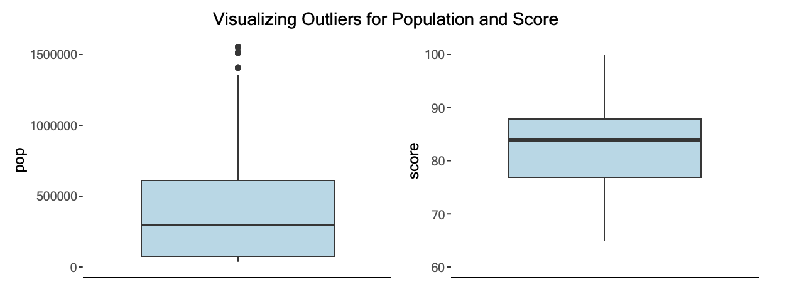
The Mean of Population of the City lies near 350,000 but it has values ranging up to 1,600,000 which leads us to believe that there are outliers in this feature. Since it is a universally verified data and there are cities with Population greater than 1.5 million in the world hence these should not be removed. There are no Outliers in the Rating of the artist and the Mean of the Ratings lie around 84.
Distribution of Artist Ratings Weekend-wise
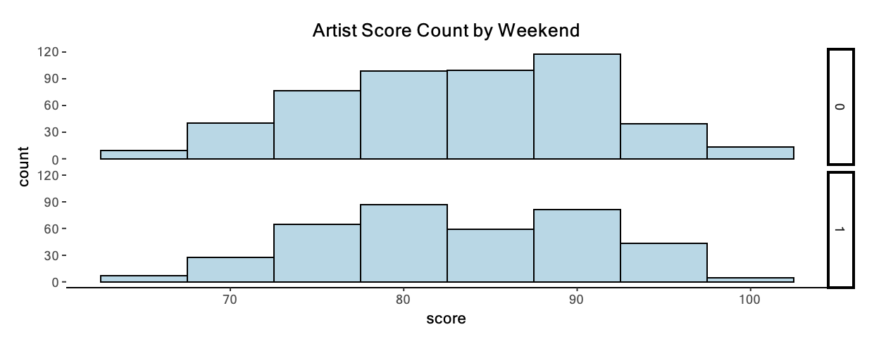In general, the artists tend to perform more on Weekdays than on Weekends. This might be also because the Weekend comprises of 2 days while Weekdays comprises 5.
Distribution of Rating of the Artist based on Month and Genre
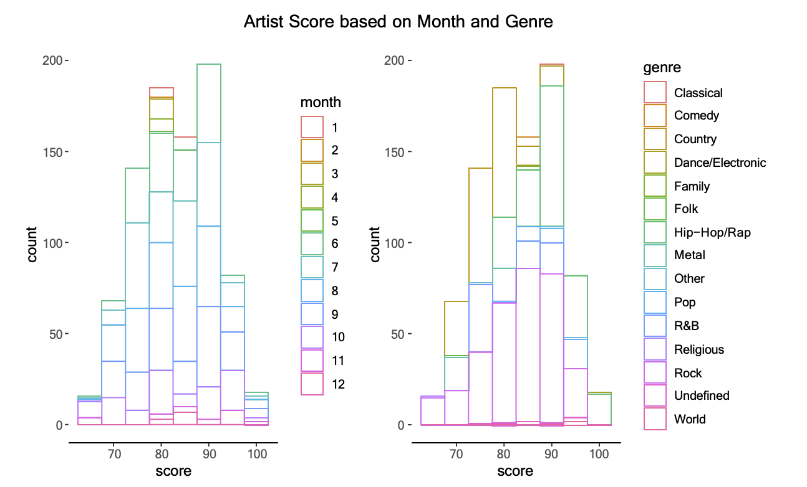Many artists irrespective of their rating tend to prefer performing from the months May to August (during summer break). Majority of Hip-Hop artists have a higher rating of around 85-95 while Country artists have a lower rating of 65-75. Rock artists are neutral and are equally distributed throughout the rating chart.
Comparison of Starting Price w.r.t. Artist Score and Month
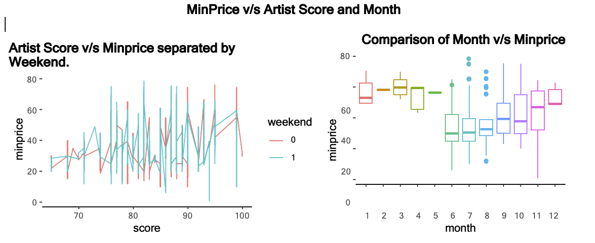As the Rating of Artists increase, the starting price of an event reaches its peak on Weekdays while for lower artist ratings the starting price reaches its peak on Weekends. Also, the mean Starting price of tickets for months of January to May is higher than other months.
Comparison of Artists with Starting Price
Comparison of Top 10 Artists with Maximum Starting Price
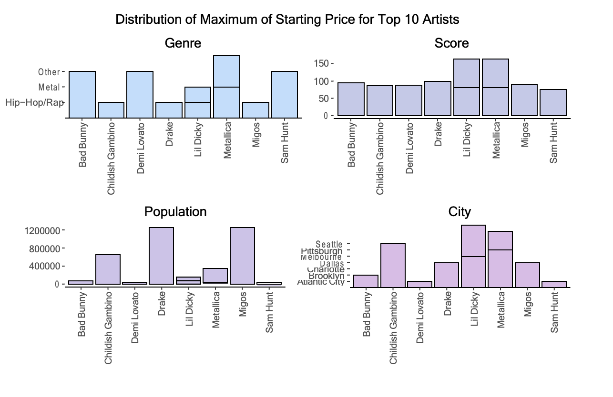
Comparison of Bottom 10 Artists with Minimum Starting Price
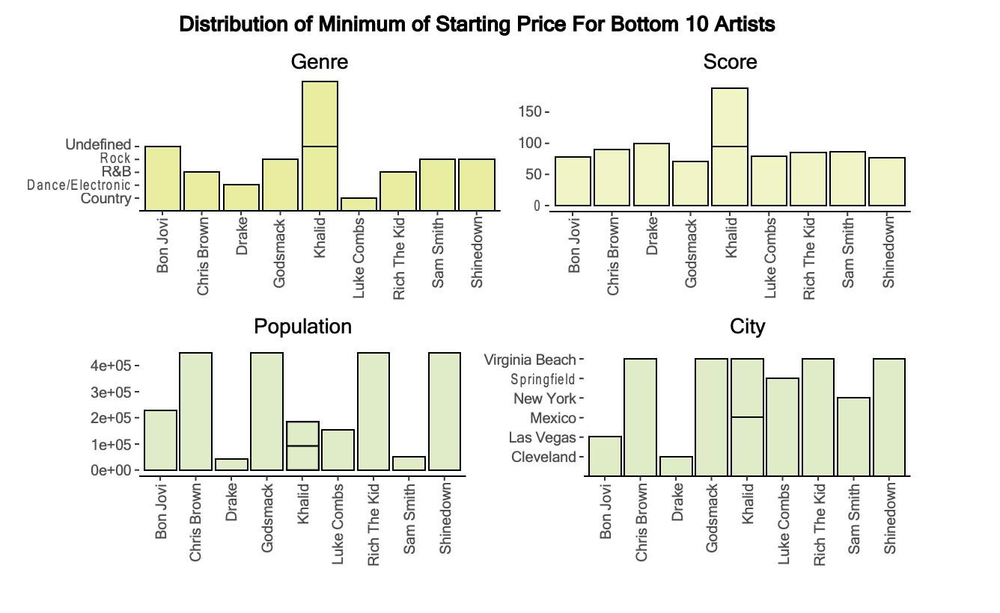
Genres like Hip-Hop and Metallica have the highest starting price while R&B, Rock and Country have the lowest starting price. Also, Cities like Seattle, Pittsburgh and Melbourne have the highest starting price while Virginia, Springfield and New York have the lowest starting price.
Correlation Plot between Numeric Features
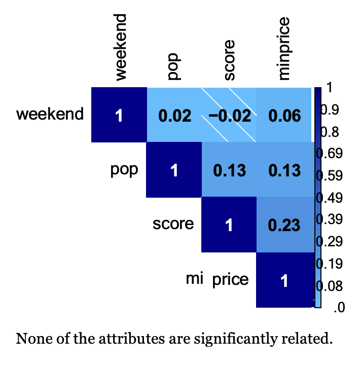
Hypothesis Testing
Using sample data, hypothesis testing is done to determine whether a hypothesis is plausi- ble. The test provides evidence that the hypothesis is plausible in considering the available data. An informed guess is first made on the parameter or distribution. The null hypoth- esis is also known as H0, because it is the default assumption. The opposite of what is said in the null hypothesis is then specified as an alternative hypothesis (designated Ha). Using sample data, the hypothesis-testing technique determines whether or not H0 may be rejected. The statistical conclusion is that the alternative hypothesis Ha is true if H0 is rejected. In applications involving hypothesis-testing, the p-value offers a suitable foundation for making conclusions. If the null hypothesis is true, the p-value serves as a measure of how likely the sample results are; the lower the p-value, the less likely the sample results. The null hypothesis can be disregarded if the p-value is less than , otherwise,it cannot be rejected. The p-value is often called the observed level of significance for the test. Regression and correlation analysis both use hypothesis tests to assess whether the correlation coefficient and regression connection are statistically significant.
T-Test
A statistical test called a t test is employed to compare the means of two groups. It is frequently employed in hypothesis testing to establish whether a process or treatment truly affects the population of interest or whether two groups differ from one another. T-tests are used when the data sets follow a normal distribution and have unknown variances. A t-test is an inferential statistic used to determine if there is a statistically significant difference between the means of two variables. Calculating a t-test requires three funda- mental data values including the difference between the mean values from each data set, the standard deviation of each group, and the number of data values. T-tests can be dependent or independent. The problem statement is established mathematically by using a sample from each of the two sets in the t-test. It assumes that the two means are equal, which is the null hy- pothesis.Values are computed and compared to the standard values using the formulas. Accordingly, the assumed null hypothesis is either accepted or rejected. If the null hypoth- esis can be ruled out, it means that the data readings are significant and almost certainly not random.
- When to use a t test
A t test can only be used when comparing the means of two groups. The t test is a parametric test of difference, meaning that it makes the same assumptions about your data as other parametric tests. The t test assumes your data: 1. are independent 2. are (approximately) normally distributed 3. have a similar amount of variance within each group being compared.
- T-test analysis on Ticket Master Data
The two performers who frequently appear in the same cities at the same time are Ed Sheeran and G-Eazy. Thus, it was decided to compare the minimum prices of these two artists. Here, the case study was whether Ed Sheeran’s average minimum price is higher than G- Eazy’s. In a new dataset, we only kept the information about the artists we were going to analyze during this process and excluded all other information. Our assumed Null Hypothesis : The mean difference of minimum price between these two artists is zero. Alternate Hypothesis : The mean difference of minimum price between these two artists greater than zero. Mathematically, Let G= mean minimum price of G-Eazy and E= mean minimum price of Ed Sheeran. Null hypothesis H0 : E− G = 0 Alternative hypothesis Ha : E− G > 0.
The output provides, - An explanation of what is being compared called the “data” in the output table. - A t-value, in this case t = 5.8615 - The degrees of freedom: 18.387. The number of “free” data points in a test that can be used for comparisons is represented by the degrees of freedom, which is connected to your sample size. The more degrees of freedom we have, the more accurate the statistical analysis will be. - The p value: 6.879e- 06 (i.e. 6.8 with 15 zeros in front). This expresses the probability that a t value this large would occur by chance. - A statement of the alternative hypothesis (Ha). In this test, the Ha is that true difference in means is greater than 0. - The 95% confidence interval. This is the range of numbers within which the true difference in means will be 95% of the time. This can be changed from 95% to a larger or smaller value. - The mean minimum price of each group. Since p value is less than 0.05, At 5% significance level, we have enough evidence to reject the null hypothesis. Therefore there is strong evidence that the mean minimum price of Ed Sheeran and G-Eazy were not the same but in fact the average minimum price of Ed Sheeran were greater than the average minimum price of G-Eazy. Bootstrapping Mean Test: To estimate the variability in a statistic of interest, bootstrapping involves sampling with replacement from observed data. Bootstrapping is a statistical technique that generates several simulated samples from a single dataset. With this method, standard errors, confi- dence intervals, and hypothesis testing can all be calculated. The bootstrap is frequently used to evaluate the precision of an estimate based on a sample of data from a larger population. Consider the sample mean. Drawing numerous different sample means is the most effective technique to learn how they behave. One method of resampling is to generate a proxy universe based solely on our sample by repeatedly replicating the sample data. Since the sample typically contains all the information we have about the population that gave rise to it, it is sometimes the best place to begin when building an artificial proxy universe from which we can extract resamples and study the distribution of the statistic of interest. In this case, we replicated our data 10000 times to check the results, the mean ratio was found from bootstrap G-Eazy and Bootstrap Ed Sheeran and we calculated the 95% confi- dence interval for the difference between the average means of these two artists and obtained the results that at 95% bootstrap percentile interval,mean ratio of G-Eazy’s minimum price to Ed Sheeran’s minimum price is between 0.7332200 and 0.8629818.
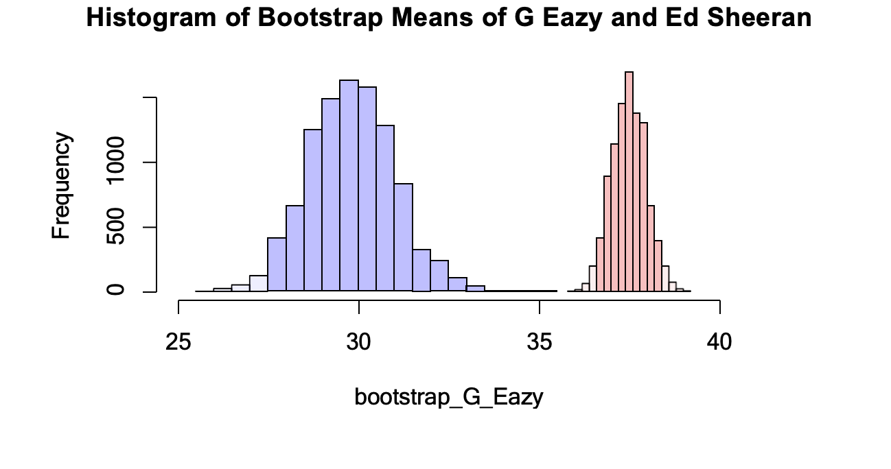
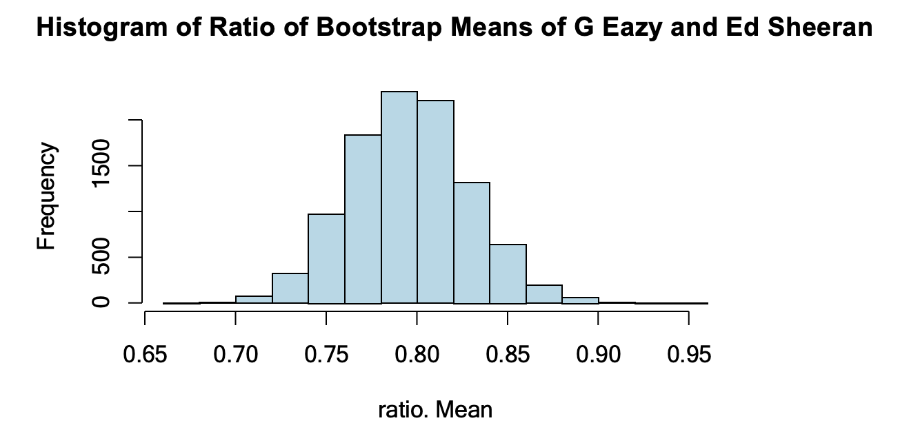At 95% bootstrap percentile interval,mean ratio of G-Eazy’s minimum price to Ed Sheeran’s minimum price is between 0.7332200 and 0.8629818.
Chi-Square Test:
Whether there is a statistically significant association between categorical variables is determined by the Chi-square test of independence. Is there a relationship between the values of one category variable and the values of other categorical variables? This is answered by a hypothesis test. Chi-square test has two hypothesis; Null hypothesis : The categorical variables do not have any relationships with one another. Knowing the value of one variable does not make it easier to predict the value of another. Alternate hypothesis : The category variables are related to one another. It does make it easier to predict the value of another variable if you are aware of the value of one. A p-value for a Chi-square test below or equal to the significance level means there is enough data to draw the conclusion that the observed distribution differs from the expected distribution. It is clear that there is a connection between the categorical variables.
- Chi-square test analysis on Ticket Master Data We considered two categorical variables ‘Artist’ and ‘City’ to find the correlation between them. We stated the hypothesis; Null Hypothesis H0 : The variables artist and city are independent to each other Alternate Hypothesis Ha : The variables artist and city are not independent to each other. From the output we see that the p-value is less than the significance level of 5%. If the p-value is less than the significance level, we can reject the null hypothesis. In our context, rejecting the null hypothesis for the Chi-square test of independence means that there is a significant relationship between the Artist and the city. Yates Continuity Correction: This Chi square test assumes that the continuous Chi-Square distribution may adequately approximate the discrete probability of the frequencies in a contingency table. The test statistic that results is typically skewed upwards because this assumption is prone to being a little inaccurate. To correct for this bias we can apply Yate’s continuity correction, which applies the follow- ing correction to the X2 formula: X2 = Σ(|Oi-Ei| – 0.5)2 / Ei where O is the observed value, E is the expected value and Σ is the sum value.
According to the test, the p value that corresponds to the test is p = 0.002999, which is less than 5% significant value, so we can reject the null hypothesis.
ANOVA Test
- One Way ANOVA:
When testing an hypothesis with a categorical explanatory variable and a quantitative response variable, the tool normally used in statistics is Analysis of Variances, also called ANOVA. We are performing an ANOVA test using the R programming language, to a dataset of ticketmaster minimum price across artists. The objective of the ANOVA test is to analyse if there is a (statistically) significant difference in minimum price of the concert tickets, between different artists. In other words, I am interested to see whether minimum price of concert tickets are more likely to change with the artists’ performing. The Hypothesis is: Null Hypothesis: There is no effect of the Artist on the Minimum Price. Alternative Hypothesis: There is an effect of the Artist on the Minimum Price. Here the artists are the explanatory variable and minimum price is the response variable.
We can see that, our F value is 17.48, and p-value is very low too. In other words, the variation of minimum price of tickets means among different artists is much larger than the variation of minimum price of tickets within each artist performing, and our p-value is less than 0.05, Hence we reject the null hypothesis H0 and can conclude that there is a significant relationship between artists and minimum price of concert tickets.
- Two Way ANOVA:
The two-way ANOVA test is used to simultaneously compare the effects of two grouping variables on a response variable at the same time. The objective of the ANOVA test is to analyse if there is a (statistically) significant difference in minimum price of the concert tickets, between different cities and different days (i.e. weekend or weekday). In other words, we are interested to see whether minimum price of concert tickets are more likely to change with the cities and weekends. The Hypothesis is: Null Hypothesis: There is no effect of the City and Weekend on the Minimum Price. Alternative Hypothesis: There is an effect of the City and Weekend on the Minimum Price. Here the city and weekend are the explanatory variable and minimum price is the response variable.
We can see that, my F value is 3.92 for weekend and 3.25 for city, and p-value is very low too. In other words, the variation of minimum price of tickets means among different cities and different days is much larger than the variation of minimum price of tickets within each city and weekend or weekday performances. The p-value is less than 0.05, Hence we reject the null hypothesis H0 and can conclude that there is a significant relationship between cities and weekends to the minimum price of concert tickets. We go ahead to check if you think these two variables will interact to create a synergistic effect. Here, we can see that city, weekend and their interaction effect are all significant since their p-values are less than 0.05 and can conclude that there is a significant relationship between cities, weekends and their interaction effect to the minimum price of concert tickets.
Linear Regression
- A fundamental and widely used form of predictive analysis is linear regression. Re- gression analysis’ main goal is to look at two things:
- Is it possible to accurately predict an outcome (dependent) variable using a set of predictor variables?
- Which particular variables—as shown by the size and sign of the beta estimates— are highly significant predictors of the outcome variable, and how do they affect the outcome variable?
- The relationship between one dependent variable and one or more independent vari- ables is explained using these regression estimates. The following formula represents the regression equation’s most basic version with one dependent variable and one independent variable:
Y = 𝛼 + 𝛽1(X1) + 𝛽2(X2) + + 𝛽𝑛(Xn) where Y = Estimated Dependent Variable Score, Alpha = Intercept, Beta = Regression Coefficient, and X = Score of the Independent Variable.
Three major uses for regression analysis are: 1. Determining the strength of predictors 2. Forecasting an effect 3. Trend forecasting
Types of Linear Regression: 1. Simple linear regression: 1 dependent variable (interval or ratio), 1 independent variable (interval or ratio or dichotomous) 2. Multiple linear regression: 1 dependent variable (interval or ratio) , 2+ independent variables (interval or ratio or dichotomous) 3. Logistic regression: 1 dependent variable (dichotomous), 2+ independent variable(s) (interval or ratio or dichotomous) 4. Ordinal regression: 1 dependent variable (ordinal), 1+ independent variable(s) (nom- inal or dichotomous) 5. Multinomial regression: 1 dependent variable (nominal), 1+ independent variable(s) (interval or ratio or dichotomous) 6. Discriminant analysis: 1 dependent variable (nominal), 1+ independent variable(s) (interval or ratio)
Model 1
Firstly we fit all our independent variables to check which features are infact the most significant i.e., have the most effect on our dependent variable (minprice). The formula for this fit can be given as: minprice = 𝛼 + 𝛽1(city) + 𝛽2(artist) + 𝛽3(venue) +𝛽4(weekend) + 𝛽5(pop) + 𝛽6(month) + 𝛽7(score) +𝛽8(genre) + 𝜖
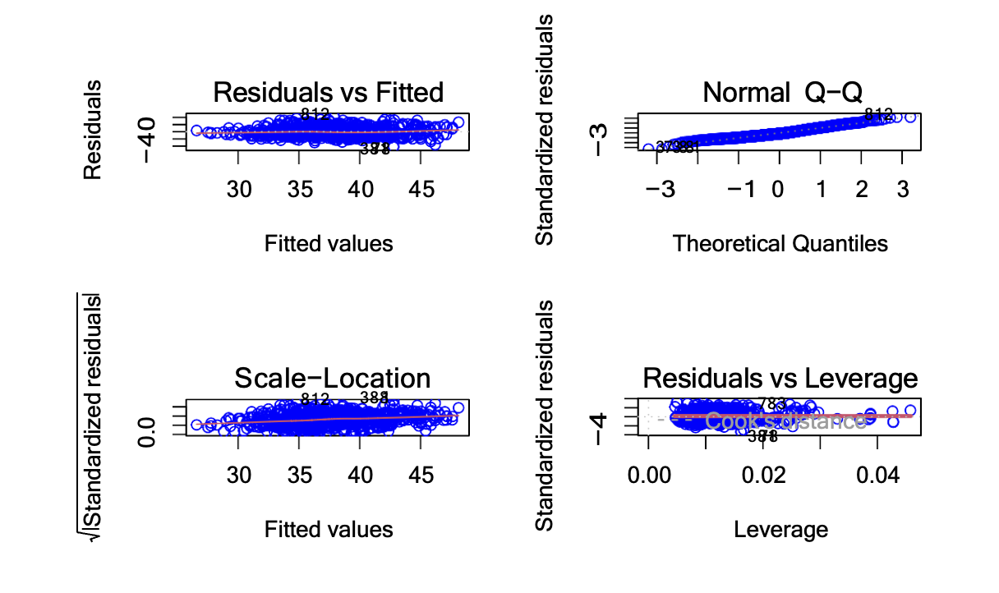
Seeing the summary statistics of our first fit we can conclude that the Artist, Venue of the Event, Population of the city the event is in and the Rating of the Artist are the main features that help predicting the Starting price of and event.
Model 2
From the previous model we fit the model again with our top 4 features: the Artist, Venue of the Event, Population of the city the event is in and the Rating of the Artist. The formula for this fit can be given as:
minprice = 𝛼 + 𝛽1(artist) + 𝛽2(venue) + 𝛽3(pop) + 𝛽4(score) + 𝜖
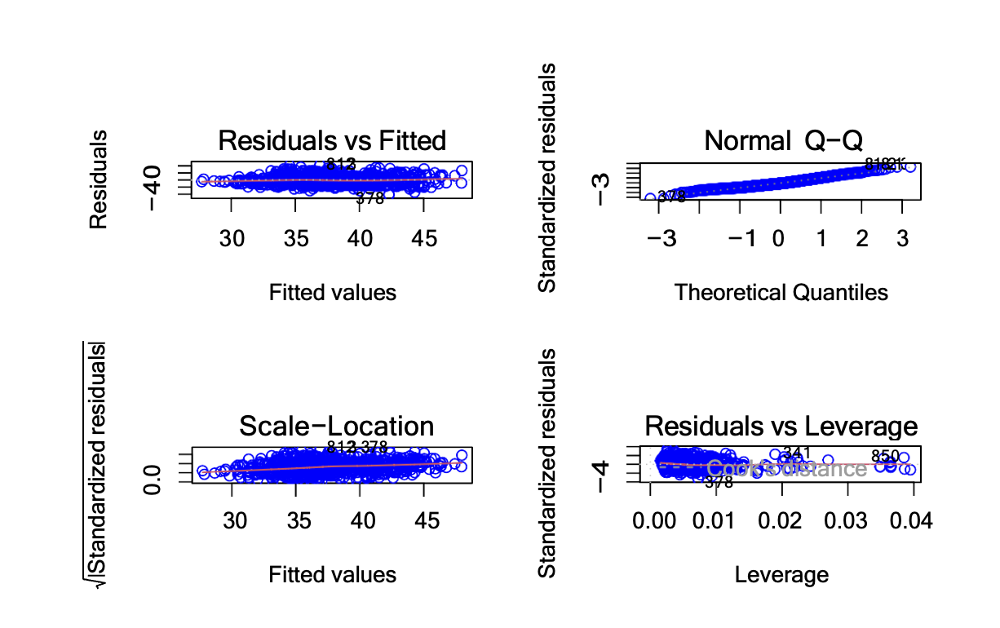
There is not a lot of difference between the first and second fit models in Adjusted R- Squared values. Hence more complex models need to be applied on this data to get better results.
Model 3
A quadratic regression is the process of finding the equation of the parabola that best fits a set of data. The formula for this fit can be given as:
minprice = 𝛼 + 𝛽1(artist) + 𝛽2(artist2) + 𝛽3(venue) +𝛽4(venue2) + 𝛽5(pop) + 𝛽6(pop2) + 𝛽7(score) + 𝛽8(score2) + 𝜖
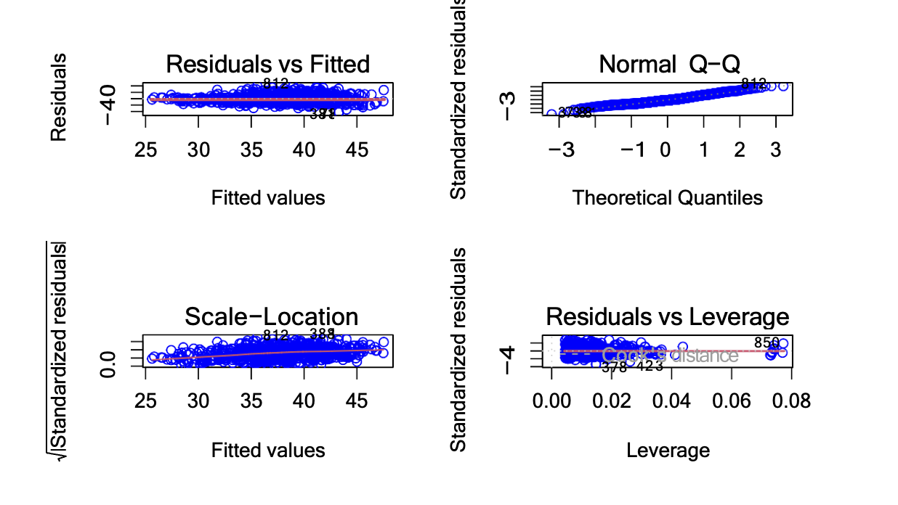
The Quadratic Regression model increased the Adjusted R-Squared slightly from the pre- vious two models.
Model 4
As a special case of multiple linear regression, polynomial regression is a type of linear regression that estimates the relationship as an nth degree polynomial. The formula for this fit can be given as:
minprice = 𝛼 + 𝛽1(artist) + 𝛽2(artist2) + 𝛽3(artist3) + 𝛽4(artist4) + 𝛽5(artist5) + 𝛽6(venue) + 𝛽7(venue2) +𝛽8(venue3) + 𝛽9(venue4) + 𝛽10(venue5) + 𝛽11(pop) + 𝛽12(pop2) + 𝛽13(pop3) + 𝛽14(pop4) + 𝛽15(pop5) +𝛽16(score) + 𝛽17(score2) + 𝛽18(score3) + 𝛽19(score4) + 𝛽20(score5) + 𝜖
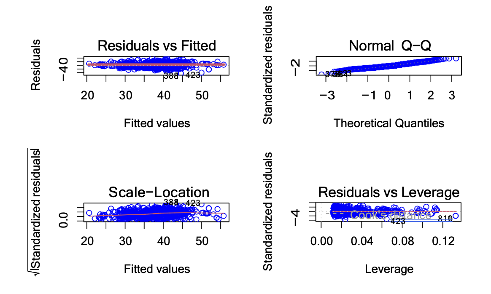
From the graphs we can see that there are number of outliers present in our data but even so our Adjusted R-Squared value has increased significantly from the previous 3 models.
Checking for Outliers
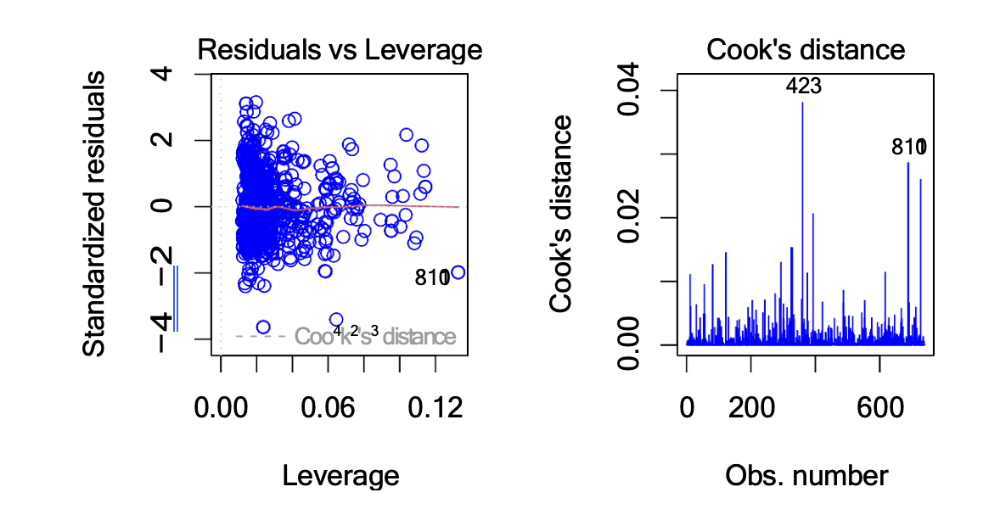
The Polynomial model has some outliers. After checking these values from our original dataframe we can confirm that these are infact outliers and must be removed. One of the examples of the outliers is Outlier number 423 which has minimum price has 1$ as the starting price of the event even though the Artist of the event is top tier and has a very high rating.
Model 5
Polynomial Regression is sensitive to outliers so the presence of one or two outliers can also badly affect the performance. Hence we remove these outliers using Cook’s Distance. A general rule of thumb is to investigate any point that is more than 4x the mean of all the distances. The formula for this fit is the same our previous model since the model parameter is not changing only outliers are being removed.
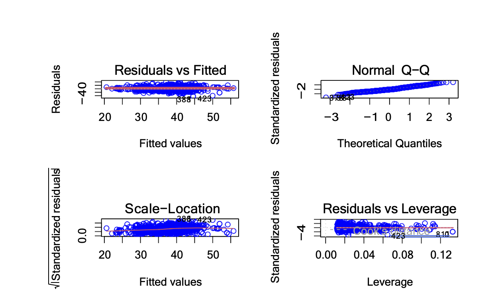
Removing outliers has increased the model’s Adjusted R-Squared even though the model’s parameters have not been changed.
Summary of Evaluation of models
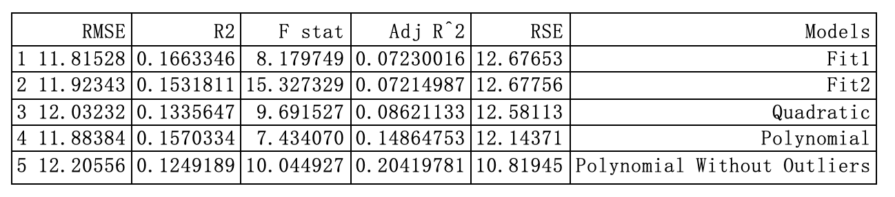
After comparing all the models, the Polynomial Model without Outliers has the highest Adjusted R-Squared, hence we choose that model as our best model.
Conclusion
In the analysis of concert data, several key insights have been uncovered. Firstly, it’s observed that many artists, regardless of their rating, tend to favor performing during the summer months of May to August. Secondly, there is a notable distinction in rating distribution among music genres, with Hip-Hop artists generally receiving higher ratings (around 85-95), while Country artists tend to have lower ratings (65-75), and Rock artists display a more evenly distributed rating range. Additionally, findings reveal variations in starting prices between different genres and cities, with Hip-Hop and Metallica concerts having the highest starting prices, and cities like Seattle, Pittsburgh, and Melbourne commanding higher starting prices. Furthermore, statistical tests suggest dependencies between variables such as minimum price and artist score, as well as the influence of the artist and city-weekend combinations on minimum price prediction. While certain variables like artist, venue, city population, and artist rating hold significance in predicting starting prices, it is acknowledged that the dataset’s randomness and the absence of comprehensive historical data may necessitate the inclusion of additional factors for more accurate price predictions in concert planning.